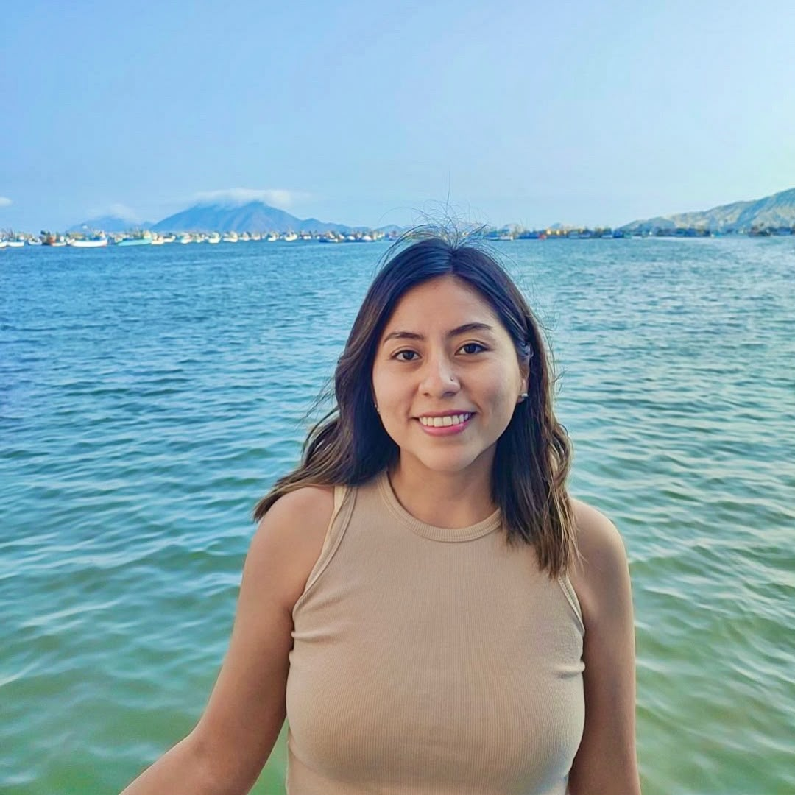
Sammy Carlos Romualdo
Environmental engineering
Environmental engineer with eight years’ experience managing environmental projects and impact assessment in Peru.
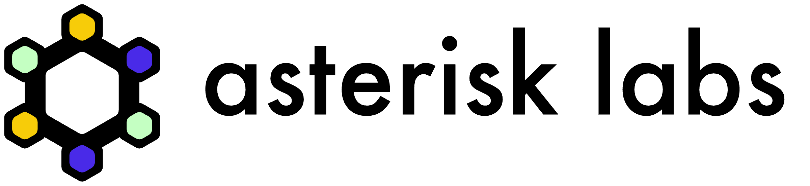
01An independent, worker-governed research lab focused on environmental research in Peru and Latin America.
Peru has no durable institutional path for independent scientific teams to work together over the long term.
Most researchers work through short-term service contracts, commonly known as locación de servicios. When each contract ends, teams fragment, knowledge is lost and software or datasets stop receiving maintenance.
This structure makes it extremely difficult to build ambitious scientific work over several years. Asterisk Peru provides a stable, worker-governed home where researchers can remain together between projects and retain what they build.
The goal is long-term scientific capacity owned and governed in Peru.
Earth observation · Environmental data · AI
| Today | With Asterisk Peru |
|---|---|
| Short service contracts | A permanent core team |
| Teams dissolve after each project | Knowledge stays inside the lab |
| Software and datasets lose maintenance | Shared infrastructure improves over time |
| Researchers work individually | Scientists build ambitious work together |
| Institutional dependence | Governance and decisions remain in Peru |

Environmental engineering
Environmental engineer with eight years’ experience managing environmental projects and impact assessment in Peru.
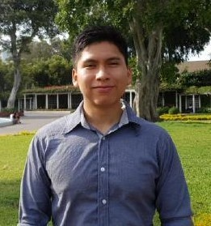
Earth observation
Earth observation researcher building open datasets for environmental research and AI.
Basic and applied research, technological development and regional scientific challenges.
Innovation, climate solutions, technology adoption and services with a path to market.
Conservation, biodiversity, climate adaptation and environmental work rooted in Peruvian territories.
Independent grants for ambitious research, conservation and visible field-based projects.
Applied research contracts, environmental data products, specialist training and long-term scientific software support.
No single fund keeps the lab alive. A diversified pipeline keeps the core team together between projects.
The present reality
Peru’s comedores populares are formed, organized and run mainly by women.
Olla Abierta funds equipment—not food.
Open crowdfunding turns verified needs into durable assets, with every sol, quote, decision, invoice and delivery public.
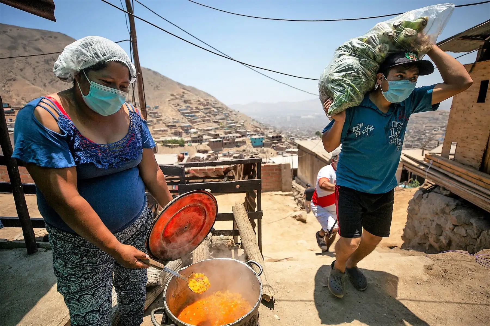
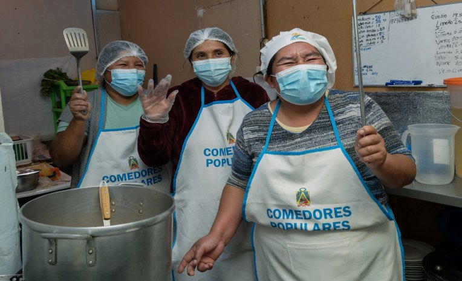
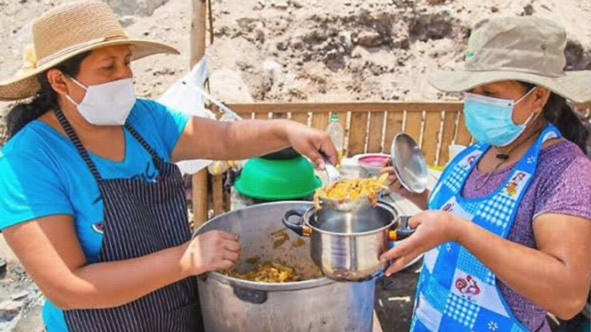
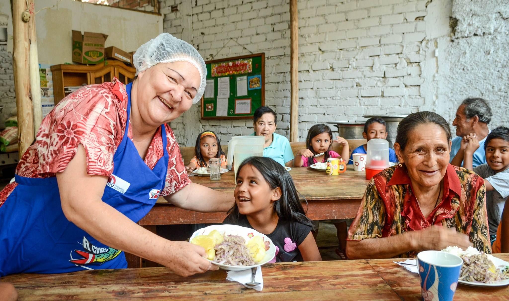
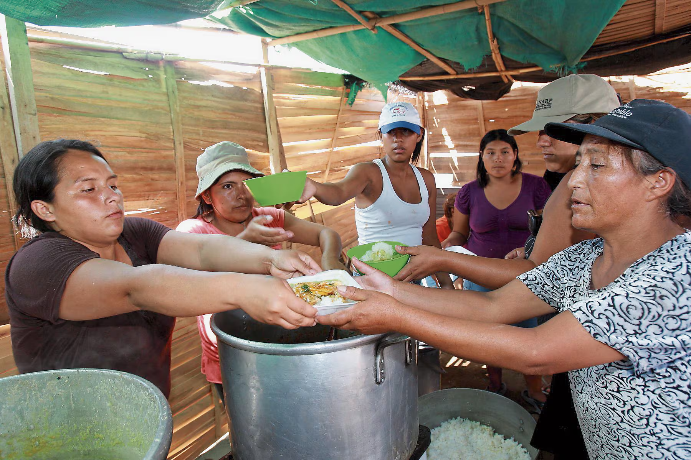
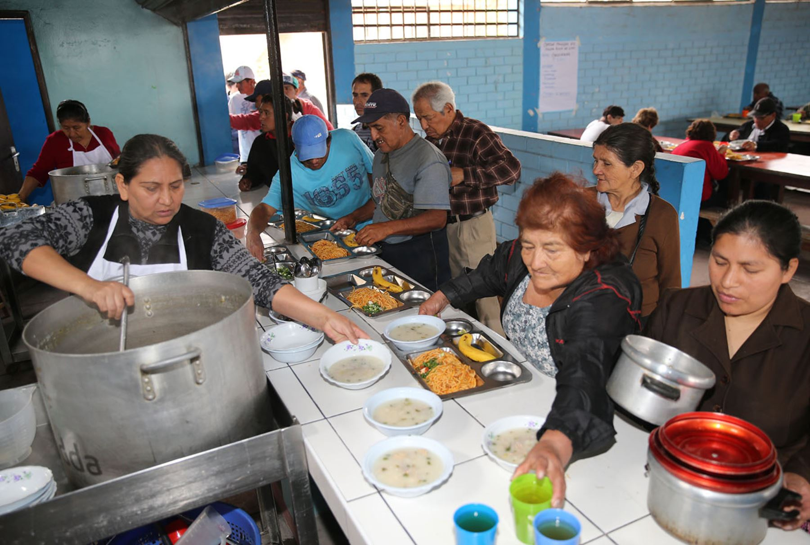
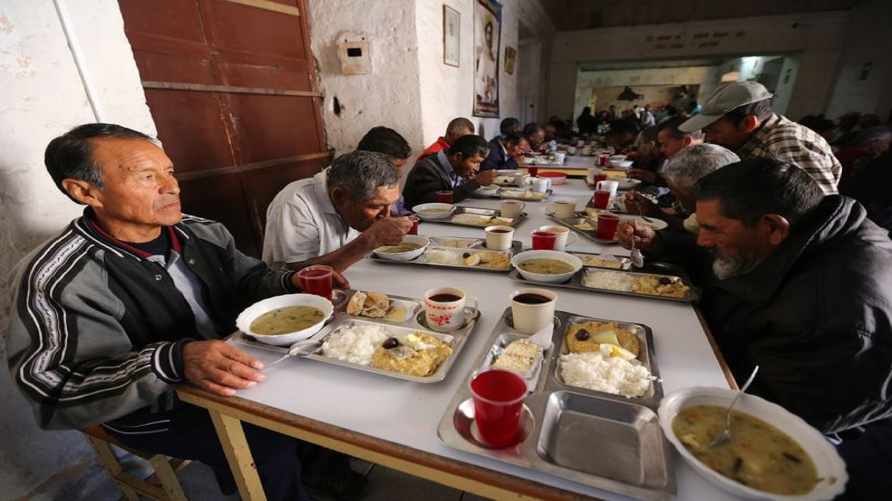
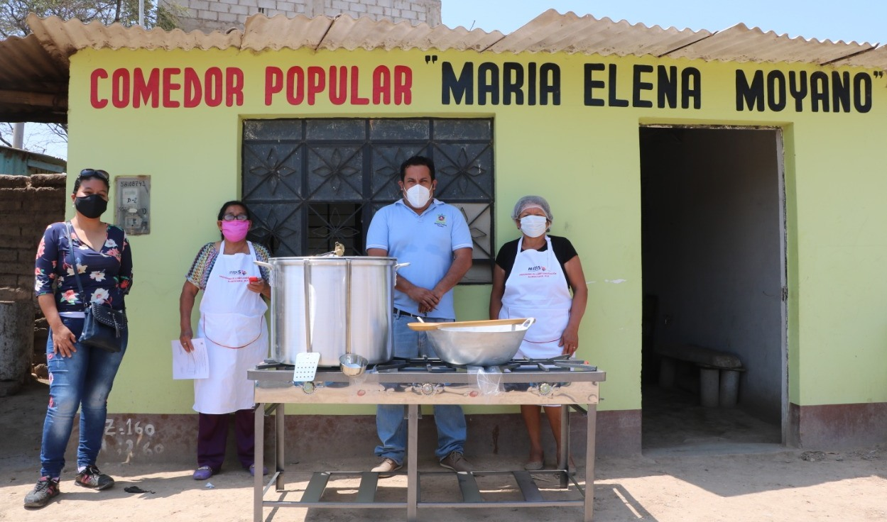
Deep Learning for Near-Real-Time Rainfall Mapping over Peru
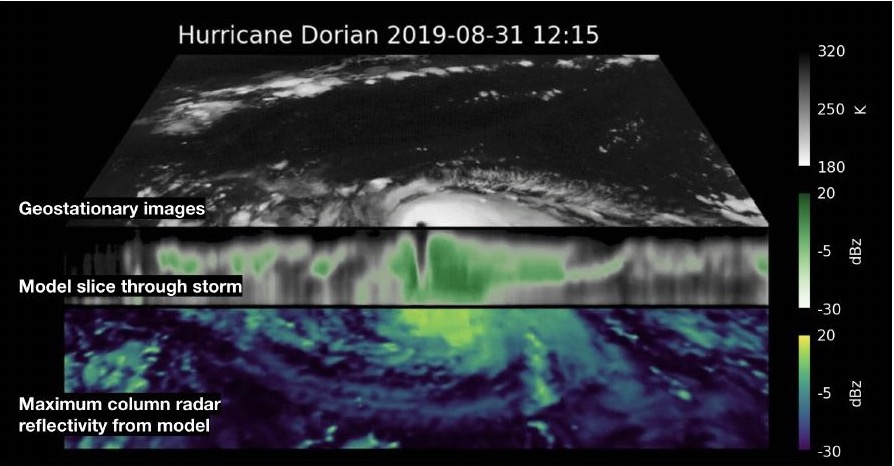
A virtual precipitation radar for Peru, updated whenever new GOES observations arrive.
First Latin American call · Peru
Funding for individual researchers and creators to develop original projects with direct social, scientific or cultural value.
Who can apply: researchers and creators aged 30–45 who reside in Peru.
Rain4PE v2 fits the AI and data science area, with a direct climate application for Peru.
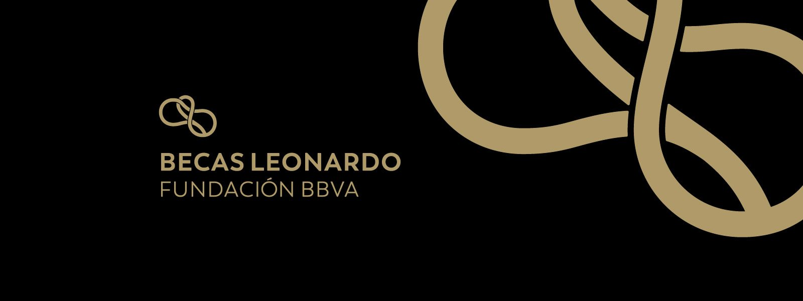
Eligible areas: Computer Science, Data Science and Artificial Intelligence; Cleantech and Biodiversity.
Deadline: 21 September 2026 · 14:00 Peru time
Becas Leonardo supports an individual researcher and an original project.
Applies as the principal researcher responsible for Rain4PE v2.
The proposed budget funds their research salaries to build and validate the prototype.
CCA provides Cesar’s institutional base in Peru and supports project delivery.
Asterisk UK provides compute capacity and technical support. Its compute hours will be included in the project budget.
Fund 12–18 months of focused research, including development salaries for Sammy and Julio.
Combine consecutive GOES observations, GPM-DPR supervision and SENAMHI station data.
Release code, evaluation results and a near-real-time demonstration over Peru.
Use demonstrated feasibility to pursue a more ambitious operational research programme.
The first grant reduces the scientific risk. The prototype becomes evidence for a larger investment in Rain4PE and Asterisk Peru.